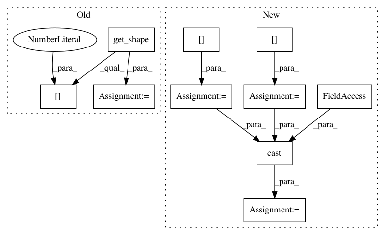

6dad4c27ab4ffa96e0b699b8d5925fbe2a1f9d38,onnx_tf/handlers/backend/upsample.py,Upsample,version_7,#Any#Any#,34
Before Change
@classmethod
def version_7(cls, node, **kwargs):
x = kwargs["tensor_dict"][node.inputs[0]]
x_shape = x.get_shape().as_list()
attrs = copy.deepcopy(node.attrs)
scales = attrs["scales"]
new_height = np.floor(x_shape[2] * scales[2])
new_weight = np.floor(x_shape[3] * scales[3])
mode = attrs.get("mode", "nearest")
if mode.lower() == "bilinear" or mode.lower() == "linear":
mode = tf.image.ResizeMethod.BILINEAR
After Change
[scales])
with tf.control_dependencies([assert_n_c_scale_is_one]):
h_w_scale = scales[2:]
h_w_shape = x_shape[2:]
new_h_w_shape = tf.cast(h_w_scale * tf.cast(h_w_shape, type(h_w_scale[0])),
tf.int32)
mode = attrs.get("mode", "nearest")
if mode.lower() == "bilinear" or mode.lower() == "linear":
mode = tf.image.ResizeMethod.BILINEAR
In pattern: SUPERPATTERN
Frequency: 3
Non-data size: 10
Instances
Project Name: onnx/onnx-tensorflow
Commit Name: 6dad4c27ab4ffa96e0b699b8d5925fbe2a1f9d38
Time: 2020-10-22
Author: pluradj@us.ibm.com
File Name: onnx_tf/handlers/backend/upsample.py
Class Name: Upsample
Method Name: version_7
Project Name: Bihaqo/t3f
Commit Name: 330154d9f5344f0a6ab39b3a313626c4b574dbbd
Time: 2017-02-11
Author: izmailovpavel@gmail.com
File Name: kronecker.py
Class Name:
Method Name: determinant
Project Name: Bihaqo/t3f
Commit Name: 40db92599e7607b97f5b52a4d6a90bef9612c317
Time: 2017-02-11
Author: izmailovpavel@gmail.com
File Name: kronecker.py
Class Name:
Method Name: slog_determinant